ChemAtlas: audit, strategy and three design directions
First deliverable. Each direction below is a working page that reads the real catalog (public/student-questions.json, 714 classified questions with verified crops) and draws real question images from the source PDFs. Nothing in the app itself has been changed.
1. Audit of the current interface
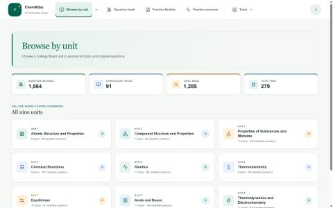
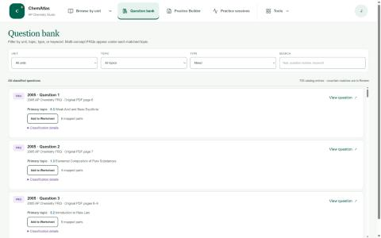
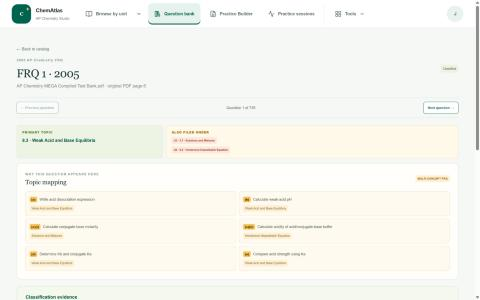
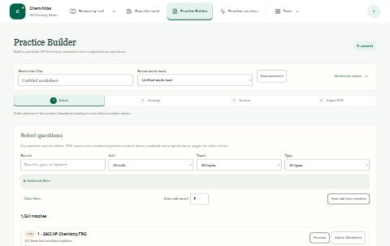
What works and should be kept
- The College Board unit and topic framework as the spine of everything. It is the mental model students and teachers already have.
- Questions shown as printed, cropped from the original PDF, with shared stimuli and per-part topic mapping for free-response questions.
- URL-addressable views, working back and forward, a skip link, real labels and
ariastates. The redesign must not lose any of this. - The worksheet pipeline: drafts, undo, reorder, presets, PDF export.
What gets in the way
- You cannot see a question while browsing. A bank row shows year, number, topic and three controls. Reading the question means leaving the list for a separate page, then scrolling past topic map, mapping, evidence and a six-cell metadata grid to reach the image. Free-response rows show no question text at all.
- Low density. About three results per desktop screen and one and a half on a phone, for a 735-question list paged 50 at a time.
- Three screens to pick a topic. Browse by unit, then a unit page, then the bank, which repeats the same choice as two dropdowns.
- The worksheet is invisible while you build it. Adding a question changes a button label and a count. Practice Builder is a separate route with its own copy of the filters and a four-step wizard.
- Two things are called a worksheet (Practice Builder, and the print view inside a practice session), and the Tools menu mixes study features with catalog maintenance (review queue, source page audit, test banks).
- Visual sameness. Every surface is a white rounded card with a soft shadow, most headings carry a small capitals label above them, and five accent colours appear without a rule for what each means.
- Almost no motion, so filter changes and adds give little feedback about what just happened.
- Maintainability. The whole student UI is one 578-line component with very long lines and inline styles; styling is 560 lines of page-specific CSS beside an unused shadcn token set.
Data notes found along the way (not design problems)
- Some text previews carry OCR debris (for example 2005 FRQ 3). Any design that shows preview text will expose it.
- Some crops are incomplete on their own: matching-style 2008 multiple-choice questions need their shared answer list, and 2022 MCQ 1 (source page 1636) is cut at a column edge. The previews draw only each question's own regions; the app's shared-stimulus linking is not wired into them.
2. Design strategy
- The question is the content. Show the printed question as early as possible; classification detail is one step behind it, not in front.
- The course framework is the navigation. Unit and topic are always one action away, never a page away.
- The worksheet is always present. Adding, removing and reordering are visible where you are working.
- One list, one filter model shared by browsing and worksheet building.
- Colour carries meaning or stays out. No decorative accents.
- Light surfaces only. The questions are black-on-white scans, so a dark interface would make every question glare.
- Study features and maintenance tools are separated in the navigation. The private review system is out of scope and untouched.
Motion system (shared by all three)
- Three durations. Fast, about 130 ms, for hover, press and toggles. Medium, about 280 ms, for panels, drawers and list moves. Slow, about 500 ms, for the few structural changes such as opening a unit on the map.
- Two curves. A decelerating curve for anything entering or moving; a slight overshoot reserved for confirmations (the worksheet count when you add).
- Motion answers an action. The only unprompted animation is one load sequence in Atlas.
- Lists keep their place. When a filter or reorder changes a list, rows slide from where they were to where they are. This is a 15-line helper on the Web Animations API, no library.
- Tested and rejected: whole-page view transitions. They looked good but blocked clicks for the length of each animation, which made quick filtering feel stuck.
prefers-reduced-motionturns all of it off; nothing depends on an animation finishing.
3. Three directions
A. Atlas
The whole course on one sheet. The nine units stand side by side as columns of topic blocks, tinted by how many questions each topic has. Open a unit and its column widens to show names and counts while the others narrow to coloured strips.
Open the Atlas preview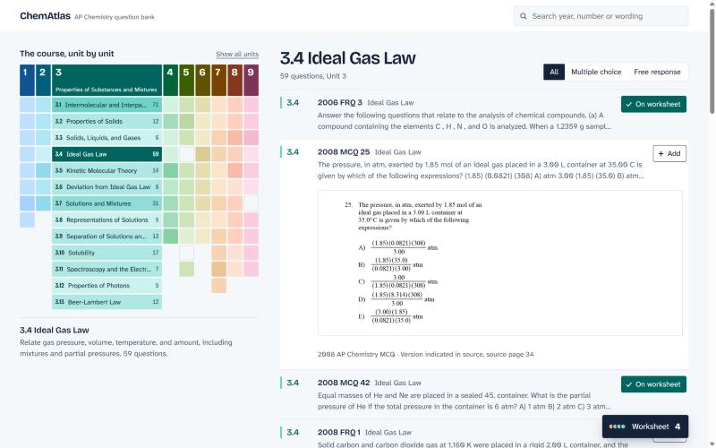
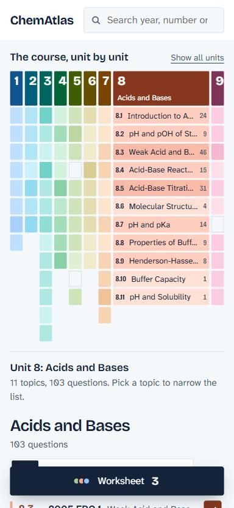
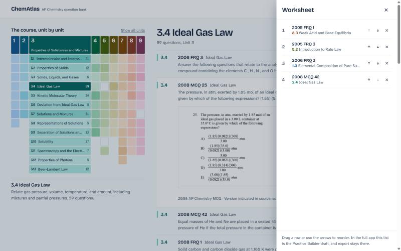
- Idea
- ChemAtlas takes its name literally: a map you read at a glance and then zoom into. Replaces the home page, the unit page and both filter dropdowns with one control.
- Type
- Bricolage Grotesque for headings and topic codes (its narrow width fits codes into small blocks); Atkinson Hyperlegible Next for reading text, chosen for students.
- Colour
- Nine unit hues in the order of a map's elevation tints, sea blue at Unit 1 to plum at Unit 9, so colour also tells you where in the course you are. Navy ink for all controls. No separate accent.
- Layout
- Map on the left and always visible, results on the right. On phones the map sits above the list.
- Preview
- A row opens in place to show the printed question and what each part tests. You never leave the list.
- Worksheet
- A floating counter with one dot per recent question in its unit colour; opens a drawer to reorder.
- Motion
- Columns rise in once on load. Opening a unit slides the columns. The counter bumps on add.
- Risks
- Unopened columns show codes only, so newcomers must open a unit to read names. Nine hues need contrast checks. The map takes most of the first phone screen.
B. Workbench
Three panes, like a mail client: units and topics on the left, a dense one-line-per-question list in the middle, the printed question on the right. Built for getting through many questions quickly.
Open the Workbench preview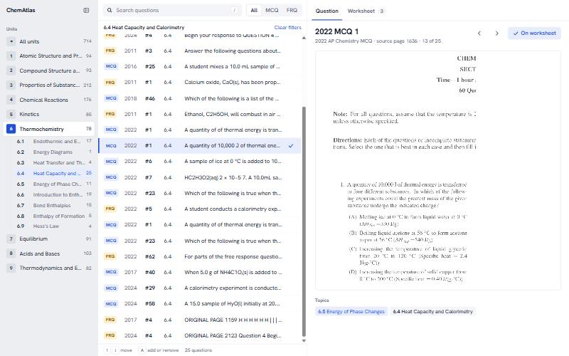
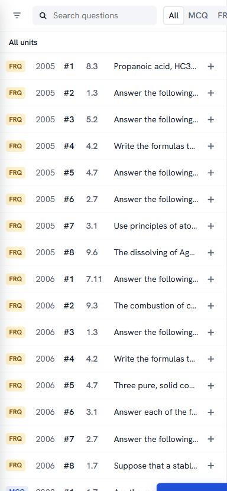
- Idea
- A tool, not a site. Around twenty questions visible at once, the selected one readable beside them.
- Type
- Hanken Grotesk only, 14 px, tabular figures so years and numbers line up.
- Colour
- Cool greys, one cobalt for selection and actions, amber marks free-response questions.
- Layout
- Collapsible sidebar, list, preview. On phones the sidebar and preview become sliding sheets.
- Preview
- Right pane with previous and next. Arrow keys or J and K move through the list, A adds or removes, slash focuses search.
- Worksheet
- A second tab in the right pane with drag and arrow reordering.
- Motion
- Quick and small: pane content fades in, sidebar slides, topic lists unfold, the tab count pulses on add.
- Risks
- The least distinctive of the three; it could be any well-made productivity app. Density may feel severe to a student arriving for the first time.
C. Proof
The worksheet is the interface. A real page sits on a desk beside the bank. Click a question to try it on the page, outlined in pencil blue, then keep it or put it back. What you see is the sheet you will print.
Open the Proof preview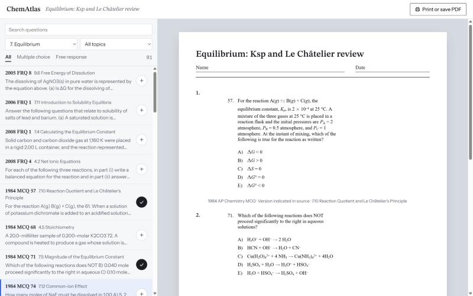
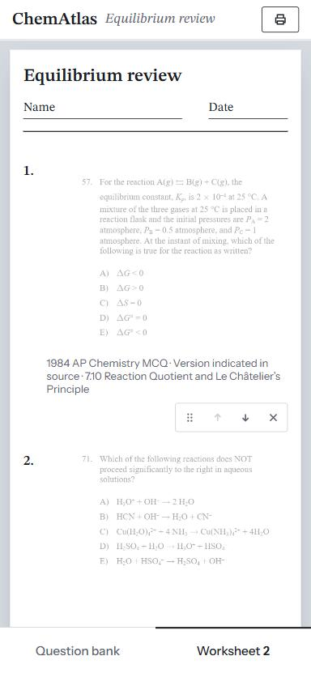
- Idea
- Teachers come to make a sheet of paper, so show the paper. Select, arrange and preview become one screen. The Print button in the preview works.
- Type
- STIX Two Text, the typeface of scientific publishing, for the page and headings; Instrument Sans for controls.
- Colour
- Grey desk, white paper, black ink. Pencil blue for anything provisional, red only for removal.
- Layout
- Bank on the left, page on the right. On phones, two tabs.
- Preview
- On the page itself, in position, at the size it will print.
- Worksheet
- Hover a question on the page to move or remove it; drag to reorder.
- Motion
- The page reflows as questions arrive and leave, and scrolls to the one you just placed.
- Risks
- Highest engineering cost: the on-screen page and the exported PDF are two renderers that must agree, and real page breaks are not shown yet. Weakest for a student who only wants to browse. Print scale is too small on phones, so the phone view enlarges questions and stops being exact.
4. Comparison
| A. Atlas | B. Workbench | C. Proof | |
|---|---|---|---|
| Distinctive identity | Strong. The map is ChemAtlas and nothing else. | Weak. Competent and familiar. | Strong, for worksheet building. |
| Finding a question | Strong. Whole course visible, one click to a topic. | Strongest for volume and keyboard use. | Adequate. Plain dropdowns. |
| Reading a question | In place, in the list. | Beside the list, with next and previous. | On the page, at print size. |
| Building a worksheet | Good. Drawer, out of the way. | Good. Tab beside the list. | Best. Direct and visible. |
| Students | Best. Shows the shape of the course. | Efficient but dry. | Not aimed at them. |
| Teachers | Good. | Very good. | Best. |
| Phone | Good; map is tall. | Good. | Compromised. |
| Build effort | Medium. One new component; the rest restyles existing views. | Medium. New shell, existing data. | High. Live page must match the PDF. |
| Accessibility | Needs care with nine hues; all text passes on its own. | Simplest to get right. | Fine for controls; the page is images either way. |
| Upkeep | Unit colours are nine tokens; map is data-driven. | Lowest. | Highest. |
5. Recommendation
Build A, Atlas. It is the only direction that gives ChemAtlas an identity of its own, it removes the most steps from the most common task (three screens to pick a topic become one), and it serves students and teachers equally. It fits the existing data and views without touching the catalog, crops or export.
Take two things from the others while building it: Workbench's keyboard movement and next/previous for the open question, and, as a later and separately approved step, Proof's live page as the Arrange and Preview stage of Practice Builder.
6. Roadmap after approval
- Branch. You name the approved base commit (AGENTS.md requires it); I create a dedicated branch in its own worktree and record the SHA. Nothing is pushed or deployed without your say.
- Tokens. One set of colour, type, spacing, radius and motion tokens replacing the page-specific variables. Fonts self-hosted in the Worker assets, not loaded from Google.
- Shell and navigation. New header; study views separated from maintenance tools. Routes and URLs unchanged.
- Question bank. Course map, denser rows, in-place question preview, keyboard movement. Replaces the home, unit and bank views.
- Question page. Printed question first; classification behind a disclosure.
- Worksheet. Always-visible tray wired to the existing drafts; Practice Builder restyled on the same list and filters.
- Practice sessions and progress brought onto the same tokens and components.
- Maintenance tools (review queue, page audit, test banks) get tokens only. The private admin review system is not touched.
- Polish and proof. Motion pass, contrast and keyboard pass, desktop, tablet and phone screenshots of every screen and state, then
pnpm run check,lintandtest.
Each step is one reviewable commit. The 578-line component is split only where a step needs it.
Decisions I need from you
- Which direction (or which mix).
- The approved base branch and commit to build from.
- Whether review queue, source page audit and test banks should stay reachable from the student navigation or move behind a separate maintenance entry.